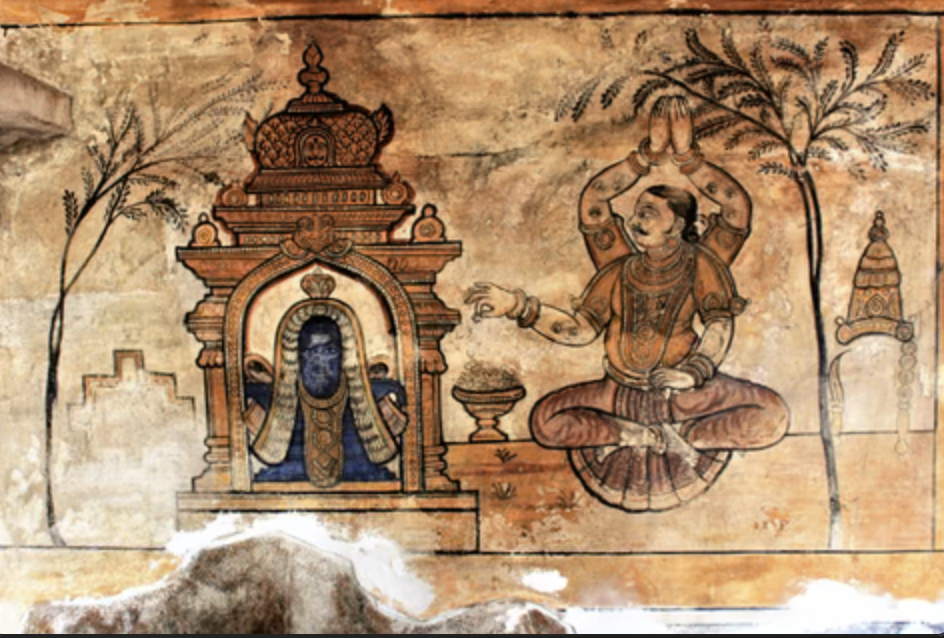

Temple art feels like divinity spread across walls and ceilings. Every surface is filled with gods, stories, and symbols, turning the entire temple into a sacred visual experience. The romance here is spiritual and immersive. You don’t just look at the art—you walk inside it. The paintings surround you, creating a sense of being part of something larger, where devotion, beauty, and storytelling merge into one.
Temple painting in Tamil Nadu dates back to ancient dynasties like the Chola dynasty. • Flourished in temples such as Brihadeeswara Temple • Created between 9th–13th centuries (and later periods as well) • Closely linked with religious worship and storytelling These paintings depict: • Hindu gods like Shiva, Vishnu, Durga • Mythological stories and epics • • Temple rituals and traditions
Temple art is grand and detailed: • Wall & Ceiling Murals Painted directly onto temple surfaces • Natural Pigments Made from minerals and plants • Bold Colors Red, yellow, green dominate • Narrative Composition Stories unfold across walls in sequence • Large-Scale Figures Designed to be seen from a distance • Symbolism & Iconography Each gesture and element has meaning
Temple paintings were created by skilled artisans and temple craftsmen. • Worked under royal and religious patronage • Had deep knowledge of religion and symbolism • Art was considered a form of devotion, not just profession